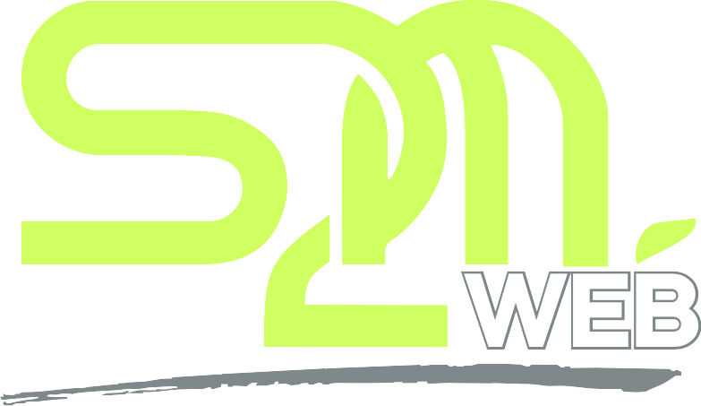

<header class="desktop-header">
    <div class="header-logo">
        <a href="index.html">
            
        </a>
    </div>
    <div class="header-right">
        <a href="#" class="header-profile">
            
            <div class="profile-info">
                <div class="profile-name" data-header-name>Administrateur - Automat SI</div>
                <div class="profile-description" data-header-desc>Responsable informatique | Siège - Administration S2M</div>
            </div>
        </a>
        <a href="index.html?page=login" class="header-logout" title="Se déconnecter (retour à la sélection des rôles)">
            <i class="fa-solid fa-right-from-bracket"></i>
        </a>
    </div>
</header>

<nav class="app-navbar" aria-label="Navigation principale">
    <a href="#vanga" class="dropdown-toggle"><div><i class="flaticon-computer-2"></i><span>Vanga</span></div><div><i class="flaticon-down-arrow"></i></div></a>
    <a href="#informatique-generale" class="dropdown-toggle"><div><i class="flaticon-computer-6"></i><span>Informatique</span></div><div><i class="flaticon-down-arrow"></i></div></a>
    <a href="#magasins" class="dropdown-toggle"><div><i class="flaticon-3d-cube"></i><span>Magasins</span></div><div><i class="flaticon-down-arrow"></i></div></a>
    <a href="#personnels" class="dropdown-toggle"><div><i class="flaticon-table"></i><span>Personnel</span></div><div><i class="flaticon-down-arrow"></i></div></a>
    <a href="#entrepot" class="dropdown-toggle"><div><i class="flaticon-copy"></i><span>Entrepôt S2M</span></div><div><i class="flaticon-down-arrow"></i></div></a>
    <a href="#more" class="dropdown-toggle" aria-label="Plus d'options"><div><i class="flaticon-plus"></i></div><div></div></a>
</nav>
